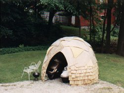
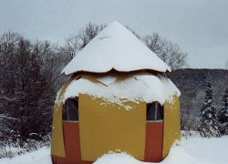
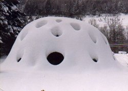
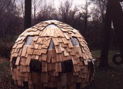
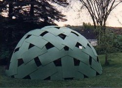

Small Domes |
|||
|  |  |  |  |
| The mess I cleaned up after the collapsed woodshed included about 50% useable plywood when cut into 24"x48" sheets. I made a 17' diameter 4v plydome which carried snowloads well. After a few years I dismantled it and made it into two 11' diameter 3/4 spheres covered with wood shingles. |
 17 ft. diameter 4v dome made of fragments of the collapsed 24 ft. 2v dome. |
17 ft. dome bore accumulated snow easily. |
|
This 11 ft. diameter playhouse has polycarbonate windows and wood shingles. It is made from half of the green dome pictured earlier. The "pinecone" formation of the plywood sheets creates the quadrilateral windows. Another similar dome was made from the other sheets from the green dome. |
||
Scooter garage |
This was an outhouse; it is now a toolshed. Zero frequency icosahedron made of whole 4'x8' sheets of 1/4 in. plywood |
|